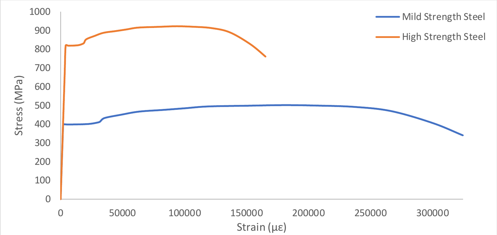
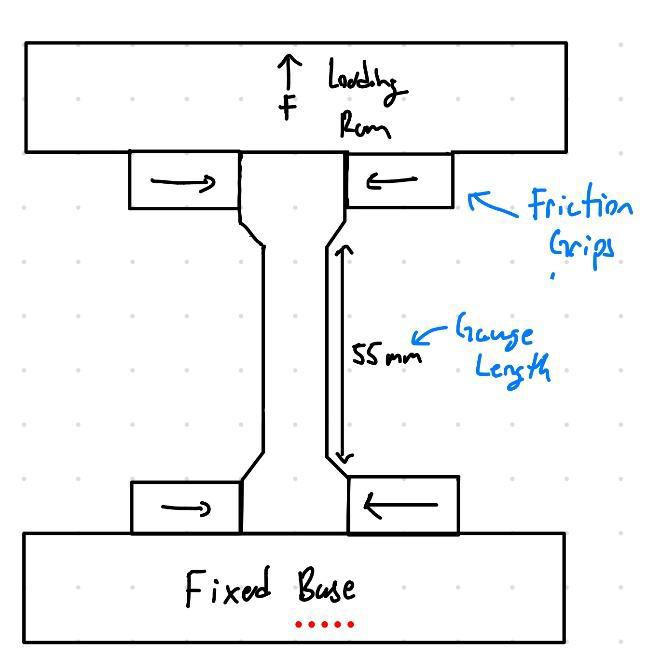
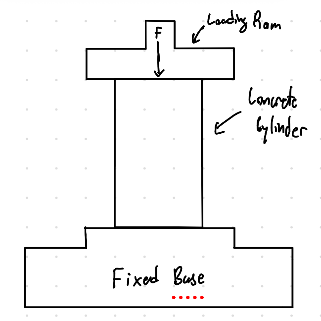
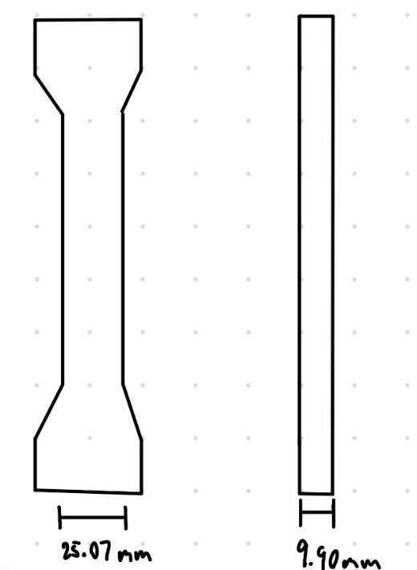
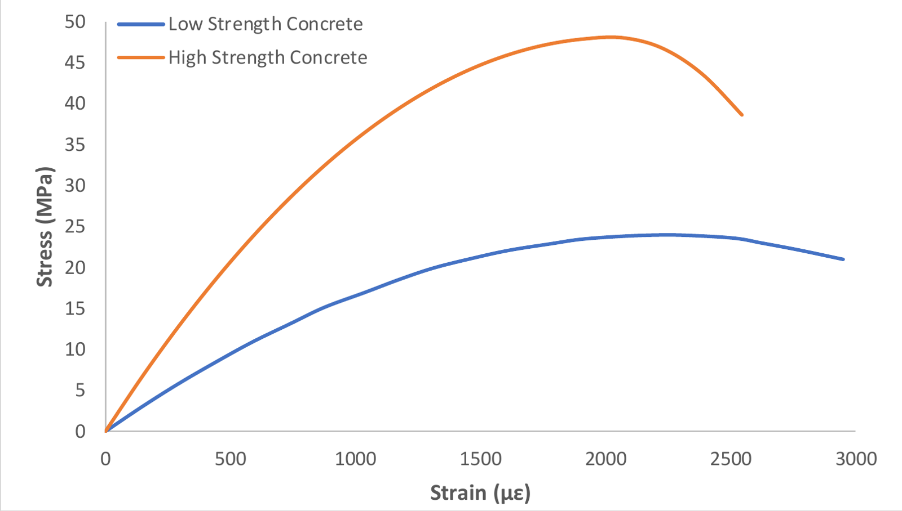

Testing & Materials
Material Properties of Steel & Concrete

Project overview
Pulling steel and crushing concrete to read their stress-strain curves.
I tested mild and high-strength steel in tension and low- and high-strength concrete in compression, then turned the raw load data into stress-strain curves and material properties.
Load and displacement were logged continuously during each test and converted to stress and strain. From the curves I calculated Young’s modulus, yield stress, ultimate strength, and ductility for all four specimens, then explained the differences through each material’s microstructure.
Key work & outcomes
- Showed that doubling steel strength halves its ductility without changing its stiffness (≈200 GPa).
- Showed that doubling concrete strength also doubles its stiffness, while ductility stays near 0.2%.
- Quantified steel as roughly 10× stronger, 5–10× stiffer, and far more ductile than concrete.
- Linked the results to microstructure: dislocation movement in crystalline steel versus the heterogeneous cement-aggregate matrix of concrete.
Test setup
Two machines, two Australian Standards
Steel coupons were pulled apart in tension; concrete cylinders were crushed in compression.
Steel coupons (≈25 mm × 9.9 mm cross-section, 55 mm gauge length) were gripped in a 300 kN Sintech machine under AS1391-2020. Sulphur-capped 35-day-old concrete cylinders (≈99 mm × 300 mm) were loaded in a 2000 kN DARTEC machine under AS1012.9-2014.



Results
What the curves show
Steel yields, necks, and stretches; concrete rises non-linearly and then cracks.
Both steels showed a linear-elastic region, a clear yield plateau, and necking before ductile fracture. Both concretes behaved non-linearly with no yield point and failed by brittle vertical and diagonal cracking into a cone.
| Material | E (GPa) | fy (MPa) | fu (MPa) | Strain at failure |
|---|---|---|---|---|
| Mild steel | 196 | 399 | 502 | 32.5% |
| High-strength steel | 202 | 820 | 923 | 16.5% |
| Low-strength concrete | 19.9 | — | 24.0 | 0.222% |
| High-strength concrete | 43.5 | — | 48.0 | 0.207% |

Continue exploring